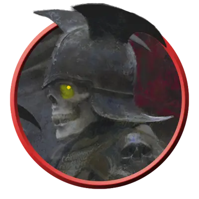

Апостол рыцаря смерти
Death Knight Aspirant
Средняя или Маленькая Нежить, Хаотичная Злая

Класс Защиты 20 Инициатива +4 (14)
Хиты 178 (21к8 + 84)
Скорость 30 футов
| мод | спас | ||
|---|---|---|---|
| СИЛ | 20 | +5 | +5 |
| ЛОВ | 10 | +0 | +4 |
| ТЕЛ | 18 | +4 | +4 |
| мод | спас | ||
|---|---|---|---|
| ИНТ | 10 | +0 | +0 |
| МДР | 12 | +1 | +5 |
| ХАР | 16 | +3 | +3 |
Иммунитеты Некротический, Яд; Испуганный, Истощение, Отравленный
Чувства Тёмное зрение 120 футов, пассивное Восприятие 11
Языки Общий, Бездны
Опасность 11 (7 200 опыта; БВ +4)
Особенности
Сопротивление магии. Апостол совершает с Преимуществом спасброски от заклинаний и прочих магических эффектов.
Военачальник нежити. Существа типа Нежить по выбору апостола (исключая его самого) в 60-футовой Эманации, исходящей от него, совершают с Преимуществом броски атаки и спасброски. Он не может воспользоваться этой особенностью, если имеет состояние Недееспособный.
Действия
Мультиатака. Апостол совершает три атаки Клинком ужаса.
Клинок ужаса. Бросок рукопашной атаки: +9, досягаемость 5 фт. Попадание: 14 (2к8 + 5) Рубящего урона плюс 10 (3к6) Некротического урона.
Сфера адского пламени (Перезарядка 5–6). Спасбросок Ловкости: Сл 15, каждое существо в 20-футовой Сфере с центром в видимой апостолом точке в пределах 120 футов. Провал: 21 (6к6) урона Огнём плюс 21 (6к6) Некротического урона. Успех: Только половина урона.
Сотворение заклинаний. Апостол сотворяет одно из следующих заклинаний (заклинательная характеристика — Харизма, Сл спасброска заклинаний 15):
Неограниченно: Призрачный скакун
1/день каждое: Разрушительная волна, Рассеивание магии
Реакции
Парирование. Условие: По апостолу попали броском рукопашной атакой, пока он держит оружие. Эффект: Апостол получает бонус +4 к КЗ против этой атаки, что может привести к её промаху.
Бонус мастерства +4
Среда обитания Любая
Сокровища Оружейные
Рыцари смерти
Терзаемые полководцы немёртвых легионов
Поборники зла, рыцари смерти — это закованные в латы скелетообразные военачальники. Сочетая сокрушительную боевую мощь и богохульное колдовство, эти бессмертные тираны ведут нечестивые легионы против живых либо веками вынашивают злобу в стенах проклятых цитаделей. Каждого рыцаря смерти преследует бремя трагедии и бесчестья, что толкает его на свершение ещё более чудовищных злодеяний.
Когда предводитель злого ордена восстаёт в обличье рыцаря смерти, его нечестивые последователи могут разделить с ним эту проклятую участь, становясь его тёмными апостолами. Эти приспешники несут в себе частицу силы своего владыки и служат ему столь же преданно, как и при жизни: безропотно исполняют указы и возвещают миру его ужасную волю.